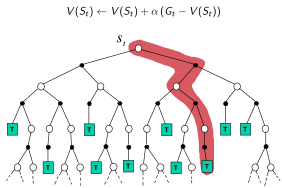
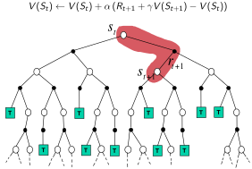
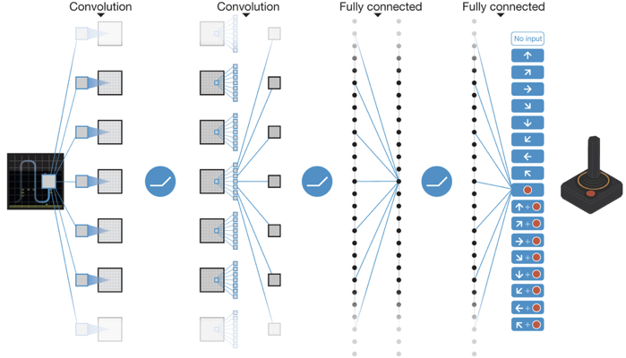

Recap
Markov Decision Process
- a set of states \(\mathcal{S}\): Each location is a state.
- a set of actions \(\mathcal{A}\): North, West, South, East
- a transition probability function \(\mathcal{P}\): here deterministic
- a reward function \(\mathcal{R}\): \(-1\) when trying to move out of the grid, \(0\) otherwise, for state \(A: +10\) and \(B: +5\)
- the discount factor \(\gamma\) – influences long term return
[@sutton2018]
From Return to Value Function
Return
cumulative future reward is a total sum of discounted rewards going forward, starting from time \(t\):
\[ G_t = R_{t+1} + \gamma R_{t+2} + \dots = \sum_{k=0}^{\infty} \gamma^k R_{t+k+1} \]
As future rewards are usually more uncertain, they are weighted less through the discount factor \(\gamma \in [0, 1]\).
Value Function
The value function measures the estimated goodness of a state, i.e. how rewarding a state is by a prediction of the cumulative future reward.
[@weng2018rl]
State-Value Function
The state-value function of a state \(s\) is the expected return if we are in this state at time \(t, S_t=s\):
\[V_{\pi}(s) = \mathbb{E}_{\pi}[G_t \vert S_t = s]\]
- Used to evaluate the goodness/badness of states,
- and therefore to select between actions.
[@weng2018rl]
Action-Value Function (Q-Function)
The action-value function (“Q-value”) of a state-action pair is defined as:
\[Q_{\pi}(s, a) = \mathbb{E}_{\pi}[G_t \vert S_t = s, A_t = a]\]
When following a target policy \(\pi\), we can integrate over the probility distribution of possible actions which again leads to the state-value function:
\[V_{\pi}(s) = \sum_{a \in \mathcal{A}} Q_{\pi}(s, a) \pi(a \vert s)\]
Advantage Function
The difference between action-value and state-value is the action advantage function
\[A_{\pi}(s, a) = Q_{\pi}(s, a) - V_{\pi}(s)\]
[@weng2018rl]
Optimal Solution for the Gridworld Example

Each location is a state. Discount factor is \(0.9\).
Actions: North, West, South, East
Reward: \(-1\) when trying to move out of the grid, \(0\) otherwise
For state \(A\) and \(B\): all actions lead to \(A'\) and a reward of \(+10\) (respectively \(B', +5\)).
[@sutton2018]
Reinforcement Learning Approaches
Common Approaches
- Dynamic Programming
- Policy Evaluation
- Policy Improvement
- Policy Iteration
- Monte-Carlo Methods
- Temporal-Difference Learning
- SARSA: On-Policy TD control
- Q-Learning: Off-Policy TD control
- Policy Gradient
[@karpathy_mdp]
DP: Policy Iteration
Iterative procedure to improve the policy when combining policy evaluation and improvement.
[@silver2015;@karpathy_mdp]
Exploring Unknown State Space
Monte-Carlo Methods
… learns from episodes of raw experience without modeling the environmental dynamics.
MC methods computes the observed mean return as an approximation of the expected return.
Computation of the empirical return \(G_t\) requires complete episodes \(S_1, A_1, R_2, ... , S_T\):
\[ V(s) = \frac{\sum_{t=1}^T \mathbb{1}[S_t = s] G_t}{\sum_{t=1}^T \mathbb{1}[S_t = s]}, Q(s, a) = \frac{\sum_{t=1}^T \mathbb{1}[S_t = s, A_t = a] G_t}{\sum_{t=1}^T \mathbb{1}[S_t = s, A_t = a]} \]
An optimal policy can be learned through an iteration of evaluation and improvement (similar to GPI).
From Monte-Carlo to Temporal-Difference Learning
Monte-Carlo Backup
TD Backup
[@silver2015]
Temporal-Difference Learning
- model-free method – no knowledge of MDP required
- learns from episodes of experience – but can learn from incomplete episodes (!)
Bootstrapping
TD learning methods update targets with regard to existing estimates rather than exclusively relying on actual rewards and complete returns as in MC methods.
The key idea in TD learning is to update the value function \(V(S_t)\) towards an estimated return \(R_{t+1}+\gamma V(S_{t+1})\) (known as “TD target”).
[@weng2018rl]
TD: Value Estimation
Update of the value function is regulated by the learning rate \(\alpha\).
In brief: TD means update a guess (of the value function) towards a guess (experiencing a single step and a guess of what follows):
\[\begin{align*} V(S_t) &\leftarrow (1- \alpha) V(S_t) + \alpha G_t \\ V(S_t) &\leftarrow V(S_t) + \alpha (G_t - V(S_t)) \\ V(S_t) &\leftarrow V(S_t) + \alpha (R_{t+1} + \gamma V(S_{t+1}) - V(S_t)) \end{align*}\]
Similarly for the Q-function: \[ Q(S_t, A_t) \leftarrow Q(S_t, A_t) + \alpha (R_{t+1} + \gamma Q(S_{t+1}, A_{t+1}) - Q(S_t, A_t)) \]
[@weng2018rl]
Comparison of Monte-Carlo and TD Control
Temporal-difference (TD) learning has several advantages over Monte-Carlo methods (MC):
- Lower variance
- Online
- Can use incomplete sequences
Natural idea:
Use TD instead of MC in our iterative control approach:
- Apply TD to \(Q(S, A)\)
- Use \(\varepsilon\)-greedy policy improvement
- But now: update every time-step
[@silver2015]
Comparison of Monte-Carlo and TD
Monte-Carlo Backup
TD Backup
Apply TD to \(Q(S, A)\), use \(\varepsilon\)-greedy policy improvement updating every time-step.
[@silver2015]
SARSA as On-Policy TD control
SARSA realizes such an update procedure on a sequence \(S_t, A_t, R_{t+1}, S_{t+1}, A_{t+1}, \dots\)
- At time step \(t\), we start from state \(S_t\) and pick action according to \(Q\) values, \(A_t = \arg\max_{a \in \mathcal{A}} Q(S_t, a)\); \(\varepsilon\)-greedy is commonly applied.
- With action \(A_t\), we observe reward \(R_{t+1}\) and get into the next state \(S_{t+1}\).
- Then pick the next action in the same way as in step 1.
- Update the action-value function: \(Q(S_t, A_t) \leftarrow Q(S_t, A_t) + \alpha (R_{t+1} + \gamma Q(S_{t+1}, A_{t+1}) - Q(S_t, A_t))\)
- \(t = t+1\) and repeat from step 1.
[@sutton2018]
On-Policy Control with SARSA
At every timestep:
- Policy Evaluation following SARSA, \(Q \approx q_{\pi}\)
- Policy improvement: \(\varepsilon\)-greedy policy improvement
[@silver2015]
TD Learning Example
\[\begin{align*} Q(S_t, A_t) \leftarrow & Q(S_t, A_t) + \\ & \alpha (R_{t+1} + \\ & \gamma Q(S_{t+1}, A_{t+1}) \\ &- Q(S_t, A_t)) \end{align*}\]
Two stochastic sources:
- the environment
- the agent policy
Difference to DP: TD Learning estimates the value functions of an agent, collecting experience online.
[@karpathy_mdp]
Off-Policy Learning
Evaluate target policy \(\pi(a|s)\) to compute \(V_{\pi}(s)\) or \(Q_{\pi}(s,a)\)
… while following different behavior policy \(\mu(a|s)\) \[ {S_1,A_1,R_2,...,S_T} \sim \mu \]
Why is this important?
- Learn from observing humans or other agents.
- Re-use experience generated from old policies \(\pi_1, \pi_2, ...\)
- Learn about optimal policy while following exploratory policy.
- Learn about multiple policies while following one policy.
[@silver2015]
Q-Learning
We now consider off-policy learning of action-values \(Q(s,a)\):
- Next action is chosen using behaviour policy \(A_{t+1} \sim \mu(·|S_t)\)
- But we consider alternative successor action \(A' \sim \pi(·|S_t)\)
- And update \(Q(S_t, A_t)\) towards value of alternative action
[@silver2015]
Q-Learning – Off-Policy TD control
- At time step \(t\), we start from state \(S_t\) and pick action according to \(Q\) values, \(A_t = \arg\max_{a \in \mathcal{A}} Q(S_t, a)\); \(\varepsilon\)-greedy is commonly applied.
- With action \(A_t\), we observe reward \(R_{t+1}\) and get into the next state \(S_{t+1}\).
- Update the action-value function: \(Q(S_t, A_t) \leftarrow Q(S_t, A_t) + \alpha (R_{t+1} + \gamma \max_{a \in \mathcal{A}} Q(S_{t+1}, a) - Q(S_t, A_t))\)
- \(t = t+1\) and repeat from step 1.
Difference to SARSA: Q-learning does not follow the current policy to pick the second action, but rather estimate \(Q_∗\) out of the best \(Q\) values independently.
[@weng2018rl;@sutton2018]
Convergence of Q-Learning
Q-learning converges towards an optimal policy. Even if you’re acting suboptimally, this process converges.
Caveats:
- Needs exhaustive exploration to guarantee convergence for suboptimal exploration.
- eventually learning rate must be quite small, but can not be reduced too quickly
Relationship Between DP and TD

[@silver2015]
Relationship Between DP and TD 2

[@silver2015]
Reinforcement Learning Algorithms Overview
[@arulkumaran2017brief]
Deep Reinforcement Learning
Drawbacks of Tabular methods
For tabular methods like basic Q-Learning: we keep a table of all \(Q\)-values.
In real world application: not possible to learn about every single state:
- too many states (or even continuous input spaces) to visit in training
- table would be too large for so many states

[@kleinCS188]
Generalization over States
In order to deal with continuous or large state spaces, we want to generalize. For this, we use Function Approximation:
- Learn about a small number of training states from experiences.
- Generalize these experiences to new, similar situations.
As a basic idea for Deep Reinforcement Learning: use Neural Networks for function approximation.
Possible Problems for Function Approximation
Goal: apply efficiency and flexibility of TD methods to realistic problems
Problem: Deadly Triad
Approach is …
- off-policy,
- employs non-linear function approximation,
- and uses bootstrapping.
Combined: can become unstable or does not converge!
[@weng2018rl]
Deep Q-Networks
… improved and stabilized training of Q-learning when using a Deep Neural Network for function approximation.
Two innovative mechanisms:
- Experience Replay: use a replay buffer for storing experiences.
- Periodically Update Target network that are employed for bootstrapping.
[@weng2018rl]
DQN Architecture Overview
“we developed a novel agent, a deep Q-network (DQN), which is able to combine reinforcement learning with a class of artificial neural network known as deep neural networks.”
[@mnih-dqn-2015]
Goal of DQN: Approximation of Q-Function
- Q-learning can be used to find an optimal action-selection policy for any given (finite) Markov decision process (MDP).
- It works by learning an action-value function that ultimately gives the expected utility of taking a given action in a given state and following the optimal policy thereafter.
- One of the strengths of Q-learning is that it is able to compare the expected utility of the available actions without requiring a model of the environment.
- Q-learning learns estimates of the optimal Q-values of an MDP, which means that behavior can be dictated by taking actions greedily with respect to the learned Q-values.
[@mnih-dqn-2015]
Problems for RL and Deep Neural Networks
Reinforcement learning is known to be unstable when a nonlinear function approximator such as a neural network is used to represent the action-value function.
This instability has several causes:
- the correlations present in the sequence of observations,
- the fact that small updates to \(Q\) may significantly change the policy and therefore change the data distribution,
- and the correlations between the action-values and the target values
[@mnih-dqn-2015]